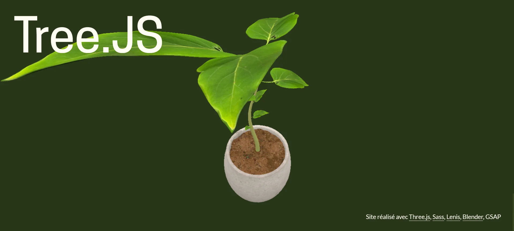

Refonte de site d’un musée
Le site s’adapte à toute taille d’écran et à été pensé pour être accessible.
Découverte du framework Three.JS, intégrant de la 3D aux sites web. J'ai réalisé l'animation sur Blender,
puis utilisé Three.JS pour l'intégrer au site.
Découvrez-en plus ↓

Pour ce projet j'ai utilisé les technologies web Three.js, Vite.js, GSAP, Sass ainsi que Lenis. La plante grandit au scroll de l'utilisateur et il peut intéragir avec dans le footer.
